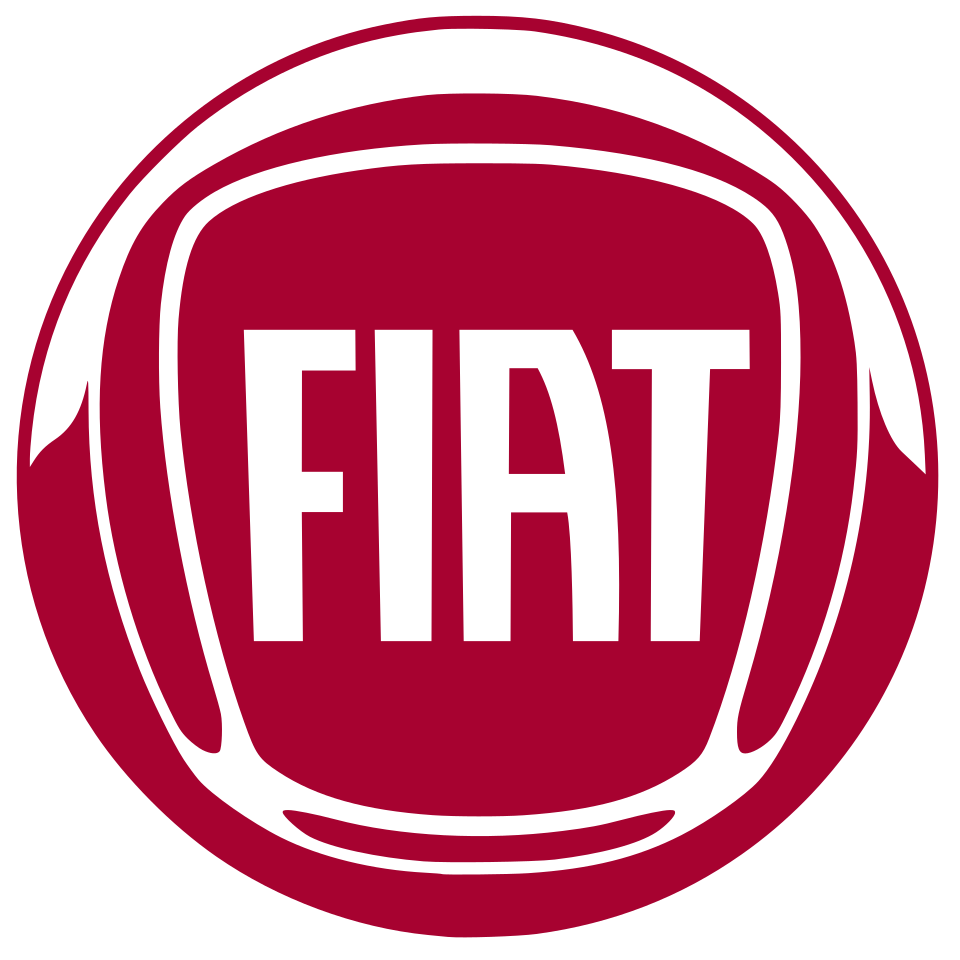

Ford
Історія бренду
Ford Motor Company — американська авто-компанія, заснована Генрі Фордом у 1903 році.
Вона стала піонером конвеєрного виробництва автомобілів, що зробило машини доступними
для широкого загалу. Саме Ford впровадив ефективне масове виробництво,
яке революціонізувало автомобільну індустрію. За більш ніж столітню історію бренд випустив
багато легендарних моделей, включно з Mustang і F-Series,
і зберігає статус одного з найвпливовіших автовиробників у світі.
Моделі авто
Ford Mustang
Легендарний спортивний автомобіль, що випускається з 1960-х.
Mustang відомий своїм потужним двигуном, агресивним дизайном та драйверськими характеристиками.
Ідеальний для любителів швидкості та яскравих емоцій за кермом.
Ford Focus
Компактний хетчбек/седан, що поєднує комфорт, маневреність та економічність.
Focus пропонує різні двигуни — від економічних бензинових до дизельних,
а також сучасні технології безпеки й мультимедіа.
Хороший вибір для міста та щоденних поїздок.
Відгуки
Ford Mustang
Власники відзначають неймовірний звук двигуна, приємну реакцію на газ і стильний вигляд.
Найчастіше пишуть, що Mustang саме той автомобіль, який «дарує емоції».
Деякі зазначають високі витрати пального, але вважають це виправданим для спортивного авто.
Ford Focus
Багато водіїв пишуть, що Focus — це надійний і впевнений у дорозі автомобіль,
зручний для паркування та економний.
Дехто згадує, що мультимедійна система інколи може «гальмувати», але загалом дуже задоволені.
Нагору ↑
Toyota

Історія бренду
Toyota Motor Corporation — японська компанія, заснована в 1937 році Кійчіро Тойодою.
Toyota виросла в одного з найбільших автовиробників у світі, відома своєю надійністю,
ефективністю виробництва та інноваціями.
Серія гібридних моделей Prius стала символом нового підходу до економії пального й екологічності.
Моделі авто
Toyota Corolla
Одна з найпопулярніших моделей в історії. Corolla — це компактний автомобіль,
який відрізняється надійністю, економічністю і простотою обслуговування.
Ідеальна для тих, хто цінує комфорт повсякденних поїздок.
Toyota RAV4
Компактний кросовер, що поєднує місткість, комфорт і прохідність.
RAV4 підходить як для міста, так і для подорожей, з простором для пасажирів і багажу.
Відгуки
Toyota Corolla
Власники часто хвалять корозійну стійкість, невибагливість
у ремонті та стабільну роботу двигуна. Багато відзначають,
що Corolla — «авто на довгі роки».
Toyota RAV4
Покупці пишуть про комфорт у дорозі, гарну оглядовість
і відчуття безпеки. Деякі згадують, що гібридні версії особливо економні,
хоча стартова ціна вища.
Нагору ↑
Fiat

Історія бренду
Fiat (Fabbrica Italiana Automobili Torino) — італійський виробник автомобілів,
заснований у 1899 році в Турині. Fiat відомий компактними міськими автомобілями,
стильним дизайном і європейською «легкістю» керування.
Компанія відіграла важливу роль у моторизації Італії та стала символом практичності й стилю.
Моделі авто
FIAT 500
Маленький та стильний міський автомобіль, який став іконою італійського дизайну.
Ідеальний для коротких поїздок по місту завдяки компактним розмірам і маневреності.
FIAT Panda
Компактний хетчбек, орієнтований на практичність.
Panda пропонує більше місця всередині, ніж 500-ка,
і добре підходить як для міста, так і для невеликих поїздок за містом.
Відгуки
FIAT 500
Власники часто захоплюються його дизайном, легкістю паркування та веселою їздою містом.
Але інколи згадують, що місця всередині замало для довгих поїздок.
FIAT Panda
Люди хвалять практичність та невелику витрату пального.
Деякі пишуть, що це «авто, яке робить буденні поїздки простішими»,
хоча деякі матеріали в салоні могли б бути якіснішими.
Нагору ↑